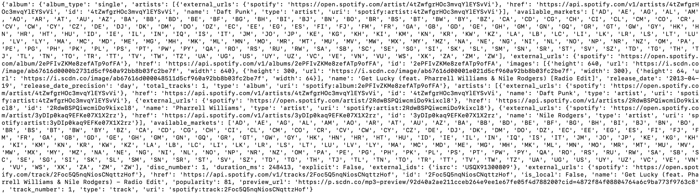

Posted on February 18, 2022.
The core idea of this project is simple and flexible. My computer has a microphone and I’d like to be able to issue it commands with it. Obviously there are many ways to do this and I’m sure many exist, but I wanted to try my hand at creating it. The foundation of having a voice activated module is subject to many possible utilizations, some obvious, and I hope that others can see this code and learn from it for their own personal projects. I named it after the terminal shell, and hope to slowly build more modules on top of it. For now though, I will focus on a single goal, which is to receive voice commands for Spotify and execute them.
This seems easy enough and is very delimited. There are many voice input APIs available but I found the easiest one to use for my purposes was speech_recognition. We simply import the module and instantiate an object that will listen through the microphone, and parse the words out of the audio with some recognition algorithm. Here I’m using the recognize_google(audio) function. It really is that simple. I thought it was going to be more complex but it makes sense that in Python there are such high level APIs.
The speech.py program simply delegates which modules run. I suppose it will eventually be “main.py”. It gets the voice input with getVoiceInput() from our utility folder and program, which uses the speech recognition object to listen to the user, and return what it recorded. If “exit” is spoken, the program will terminate. We cache all of our commands in a text file for now as a logging mechanism. A future part of this project will be to log command and time issued into a SQLite database. It will also be relevant to have the program’s output be logged.
That is effectively the whole speech recognition section of the project. The next part is a brief excursion with Spotify’s API for Developers. Creating an account here will provide a client ID as well as a client Secret ID. Both of these are needed in conjunction to issue commands to a user’s account. A .gitignore file ignores these files in my repository, but I have an example of file in the directory example_env_variables.
Another API we will use is Spotipy, which will take this access to Spotify with those ID’s and enable more ease to issue commands as well as pulling data from Spotify’s database. We need to determine what command was issued and how to execute it. The first word a user speaks will indicate which module is needed to run. A command like “Spotify play song get lucky” will access the Spotify module, whereas some future command like “Calendar add Friday 7PM dinner at Dorsia” would run the calendar module.
If the first word is “Spotify” we know to run spotifyMain(voxSplit) which will pass the command list to spotifyAct(voxSplit) which further delimits the actions taken. Currently the only functionality is playing a track, playing the next track, or playing the previous track. Next and previous tracks are simple calls to Spotipy, but to play a random track, we need getSpotifySearch(search) which will get results from Spotify using Spotipy’s search functionality, and subsequently pass them to be parsed by getSpotifyResults(search). The process is fairly simple as the results are a dictionaries of lists of dictionaries which are standardized. Below is an example of what the first item of the first track of a search looks like (here the search[‘tracks’][‘items’][0] for searching “get lucky”).

We simply need to determine a track’s URI, which stands for “Uniform Resource Indicator”. Every track, album, or artist has a unique URI. These URI’s being unique are therefore used to identify a track when being played, and are passed to Spotipy’s start_playback(…) function.
That is broad overview of the project at the current moment. It has significant potential for improvements and extensions, so there will undoubtedly be, at some point, more advancements to Shell.